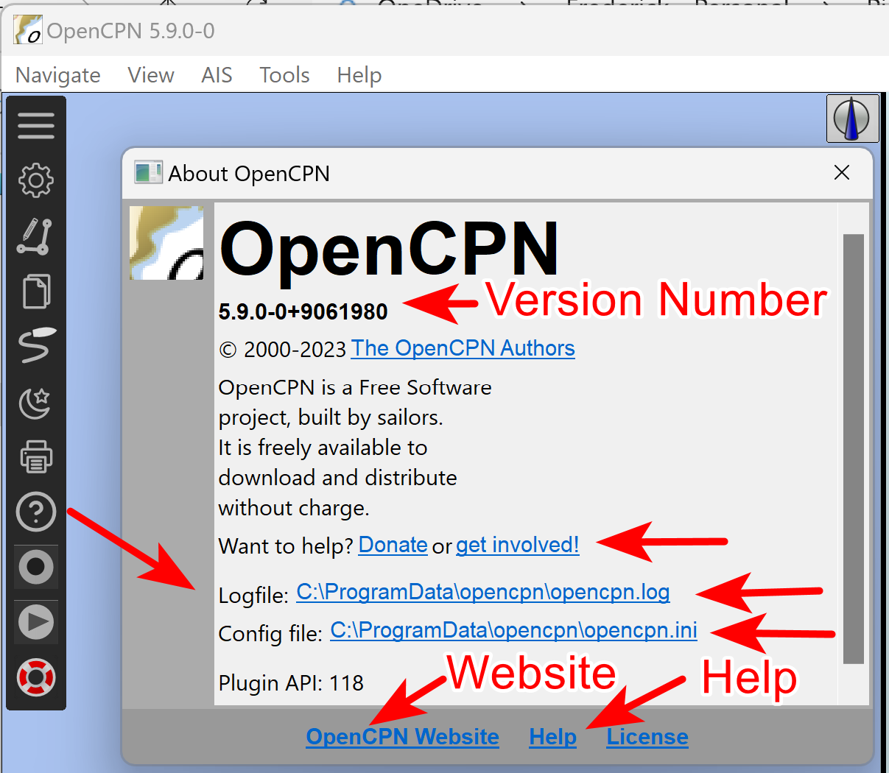

Support & Report
How to request support and report problems if I cannot find the answer in resources listed above?
Users requesting help and support, should start a New Thread inhttp://www.cruisersforum.com/forums/f134/[Cruiser’s Forum] (appropriately titled), with necessary details, screenshots and attachments. Bare minimum:
-
Opencpn Version and Plugin version (if involved).
-
Operating System & Version
-
Computer Manufacturer & Model, Graphics card if needed.
-
Repeatability: Has the problem occurred twice?
-
Describe in detail what lead to the problem.
-
You may be asked to attach Opencpn.log and Opencpn.ini/.conf files to a post in your CF thread.
-
If the log file is too big, reduce the log file size to the last 2 or 3 starts of Opencpn.
-
Screenshots to illustrate the problem if helpful.
-
Anything else you think will be helpful.
-
Users who are certain they have found a bug (or have a feature request) may report it in Tracker after the bug has been confirmed by one other user.
Volunteer Users will be providing the majority of support with rare exceptions.

Copy Settings File & Log File to Clipboard, then save to files
From Toolbar > Help, Find OpenCPN Version Number is at the top of the
menu.
Find the Log File and Config File URL links \{shown in the image
above with red arrows}. Click on the links and the installed
documentation should open in your default browser or text editor.
-
Configuration file (opencpn.ini or conf) stores all data that is persistant between sessions.
-
Log file (opencpn.log) Time based record of activities and errors from the current session.
-
OpenCPN Version Shown in the screen at the top.
Copy the contents of these files to your Clipboard and then paste or copy to a new file using your favorite text editor. Attach the files to the Cruisers Forum thread that you have created.
Linux Config and Log Files
FIXME Incorrect
The "opencpn.log" is in your home directory.
The "opencpn.conf" is in a hidden directory, called "opencpn", also
in your home directory.
For a quick way to view the files you can try these commands.
$gedit `echo $HOME/opencpn.log`
$gedit `echo $HOME/.opencpn/opencpn.conf`
Of course you can swap "gedit" for your favorite editor.
Windows 11, 10, 8 and 7 Config and Log Files
Show Hidden Files
These two files may be located in a hidden folder, so:
-
Go to Control Panel > Folder Options
-
Switch to View tab - Select "Show hidden files, folders and drives".
-
Unselect "Hide extensions for know file types"
Then the C:\ProgramData folder can be found and now the logfile and ini file can be found at:
C:\ProgramData\opencpn\
macOS Config and Log Files
The logfile, "opencpn.log" , is in / Users/ "user name" /Library/Logs/ and the "opencpn.ini " is in the / Users/ "user name" /Library/Preferences/opencpn/ directory.
How can I post a screenshot, large document or compressed file to the Cruiser’s Forum?

-
In the editing window, use the paper clip
-
Or hit Go Advanced at the bottom, then under Additional Options select Manage Attachments
-
A pop-up window will appear.
-
Select your screenshot
-
upload it (if you don’t see "upload", scroll right)
Attachments from "newcomers" are often landing in quarantine, and are reviewed by the moderators, so please be patient.
There are some size restrictions on various types of documents which will prevent upload (scroll down the upload file screen for more details. If your file is larger than these restrictions, rename them as noted below. For large zipped, txt or doc files we will often rename them in this way:
-
verylargeword.doc —> word.doc.pdf
-
verylargetext.txt —> verylargetxt.txt.pdf
-
largezipfile.zip —> largezipfile.zip.pdf
PDF size is larger, so we often use that. Then we note in the post to remove the ".pdf" after download.
Where can I download the User Manual?
It is downloaded with the software, so use "?" icon and then "Help"! It is also available on the Website Download page Then scroll to the bottom under ARCHIVES.
Is there a compatible Hardware List?
Keeping an updated list of all the devices available is virtually impossible.
-
As long as your device is able to produce NMEA 0183, OpenCPN most likely won’t have any problem understanding it.
-
Rather than looking for a list, which can’t contain everything, ask in the support forum whether your equipment of choice is likely to work with OpenCPN before going shopping.
-
If still looking for lists, you may like the following links
- Information about connecting various devices to OpenCPN:[[:opencpn:supplementary_hardware|Supplementary hardware]]
- Radars for OpenCPN: [[https://opencpn-manuals.github.io/main/radar/0.1/index.html|Radar Overlay]]